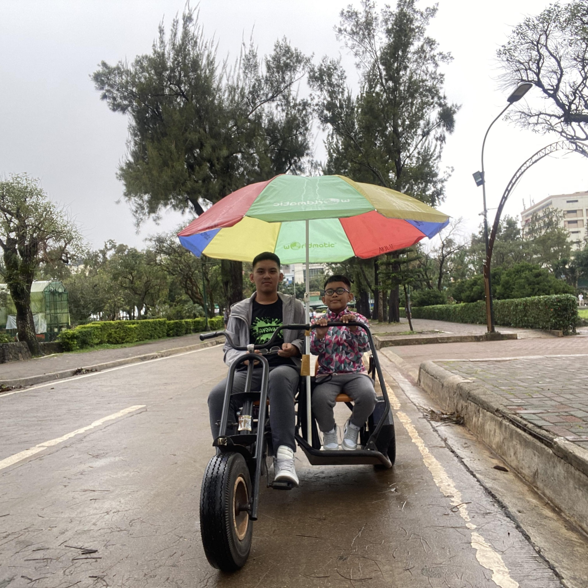
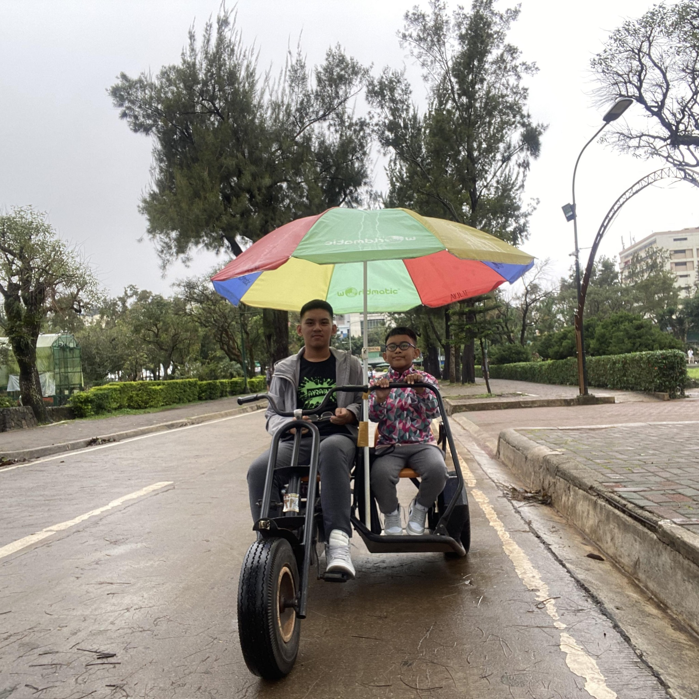
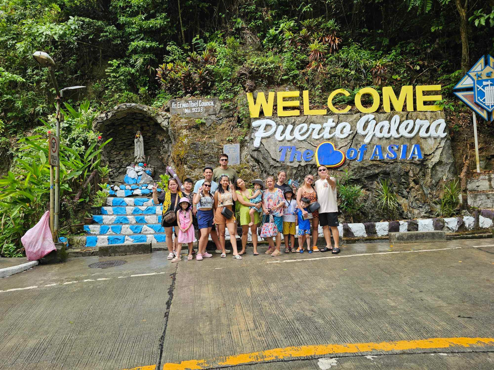
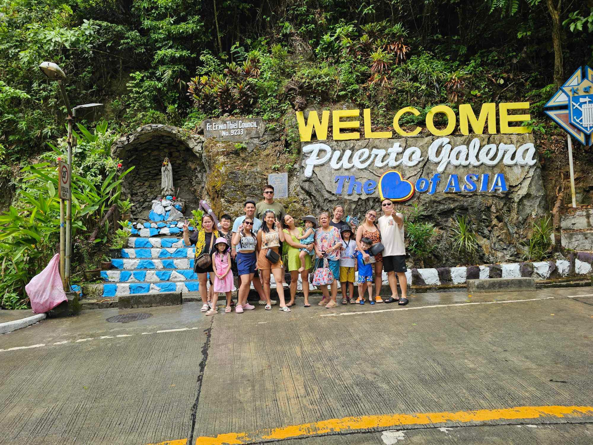
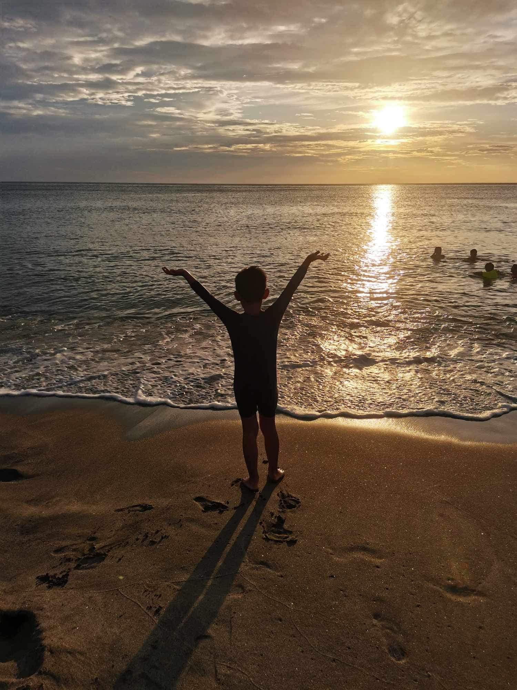
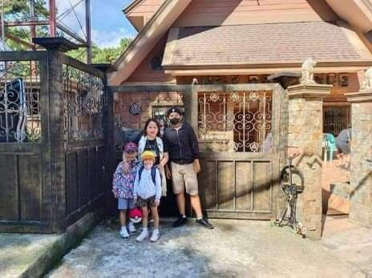
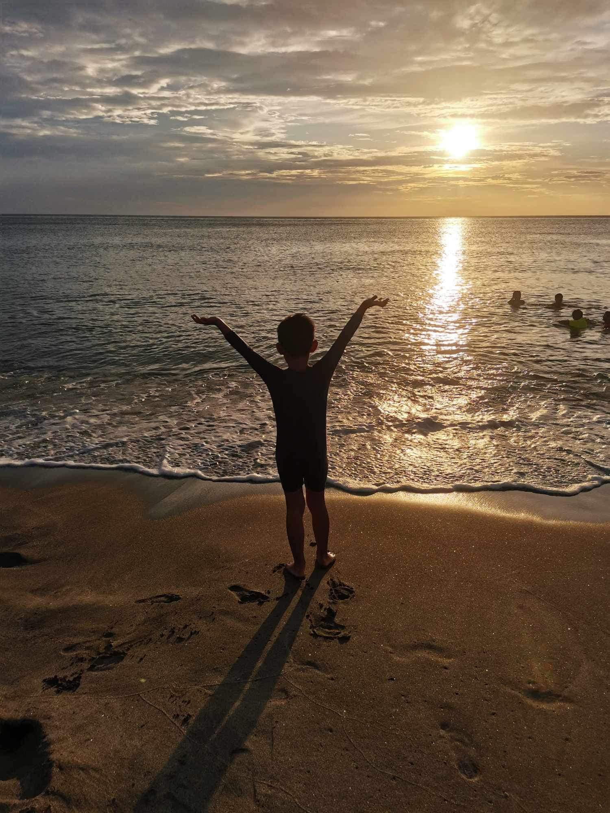
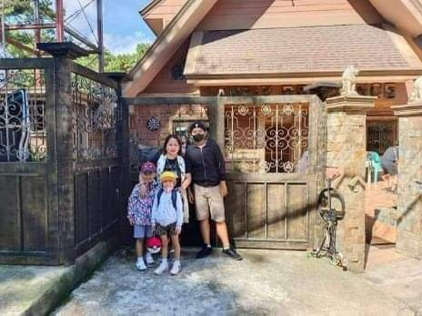
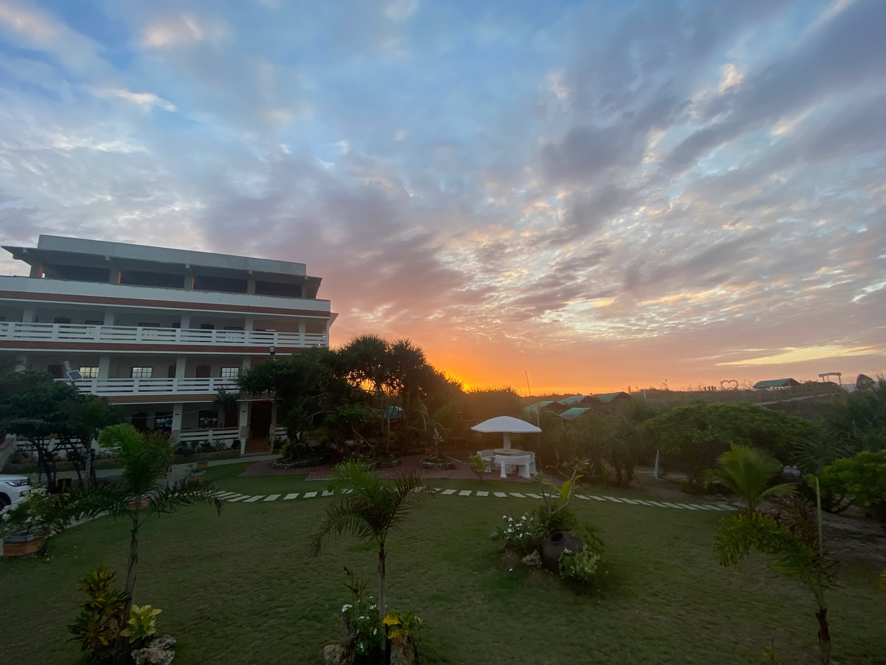
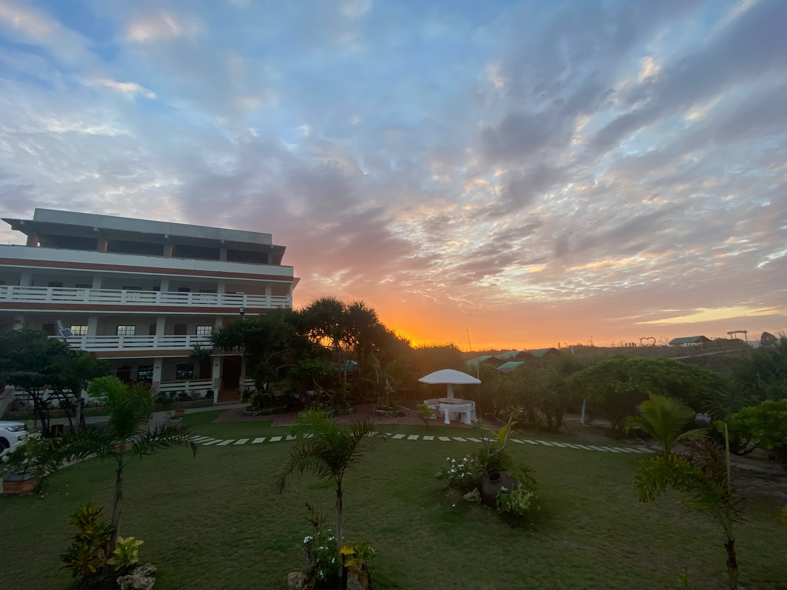

The Story Of Me
My name is Johan Andrei Louis Rios, and my mother is Maria Lourdes T. Rios. i also have a brother his name is Juan Miguel Rios, i am currently 14years old, born in March 1,2010 and im currently studying at Lakan Dula Highschool. I find joy in exploring the world, taking pictures of natures and random things, listening to music, savoring delicious food, watching dramas, and participating in various activities that bring meaning to my life. Each of these hobbies allows me to connect with the world in a way that makes me feel alive and fulfilled.
One of the cornerstones of my life is my personal philosophy: "The less you care about unnecessary worries, the happier and more content you will be." I strongly believe that by letting go of things that don't truly matter like the opinions of others, trivial problems, or events beyond our control we can free ourselves from the burdens that weigh us down. This approach to life has helped me maintain a positive outlook and stay focused on what really matters: family.
For me, family is the most important part of my life. Being with them brings me immense happiness because we share a bond that is irreplaceable. Every family member plays a crucial role in shaping who I am, offering support, guidance, and encouragement. When we are together, it feels like the world is a little brighter. We share laughter, stories, and memories that ground me and remind me of our shared history. There is a unique comfort in being around to those people who understand me on a deep level, who accept me as I am, and who have been there for me through all of life's ups and downs.
Looking ahead, I am determined to build a successful career, whether as a seaman or a businessman. The maritime industry excites me because of the opportunities it offers for travel and growth. I aim to develop strong skills at sea that will help me thrive in this profession. Alternatively, I also aspire to venture into business, where I can apply my creativity and leadership skills. Whether on land or at sea. My ultimate goal is to achieve personal fulfillment and make a meaningful contribution to the world.
Life has thrown its fair share of challenges my way, and these experiences have shaped me. One particularly difficult moment was during a group project that required a major presentation. Initially, it seemed like a straightforward task, but as we moved forward, it became clear that coordinating with the team would be more difficult than expected. Many teammates had conflicting commitments, making it hard for us to meet regularly. The lack of face-to-face communication led to misunderstandings, and soon, our initial enthusiasm began to wane. As the deadline loomed, we were still behind in research and preparation. Despite these difficulties, we pulled through and delivered a successful presentation. This experience taught me a lot about perseverance and teamwork, helping me grow as a person & as a student.
Over time, my values have evolved. In junior high, I was more focused on fitting in and doing well in school. Now, my priorities have shifted toward personal growth, long-term goals, and making a positive impact on others. One of the most memorable moments from my childhood was when I received my first cellphone. It symbolized a new level of independence and connection, and it stands out as a turning point in my life.
Johan Andrei Louis Rios
Click Here To See My Facebook Profile.
Click Here To See My Instagram Profile.
Click Here To See My Tiktok Profile.
 

 


 



 
